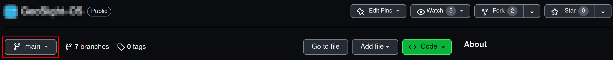
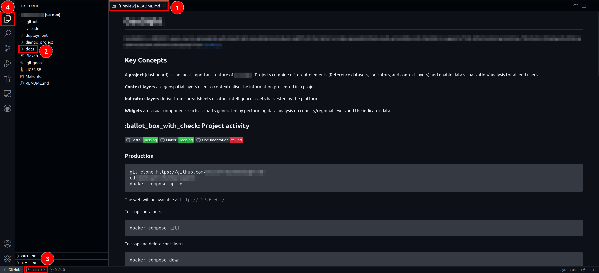
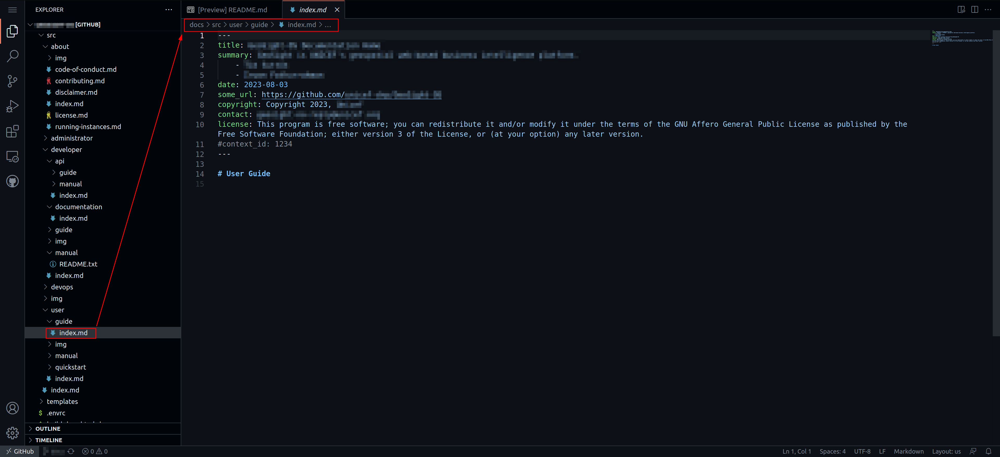
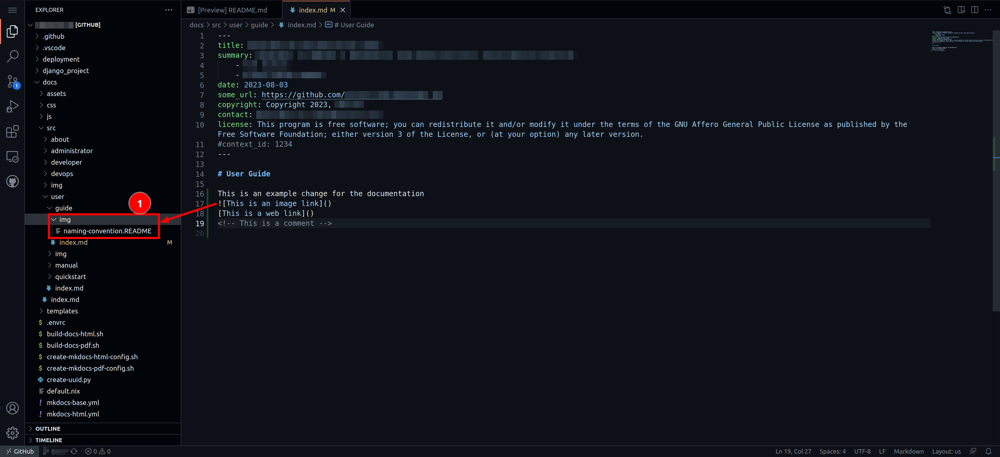
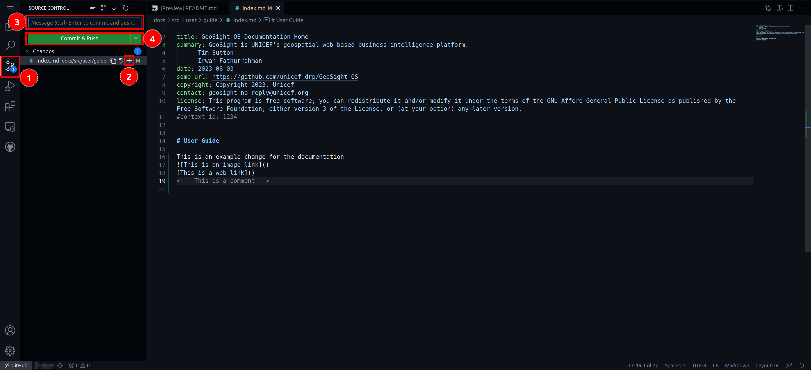
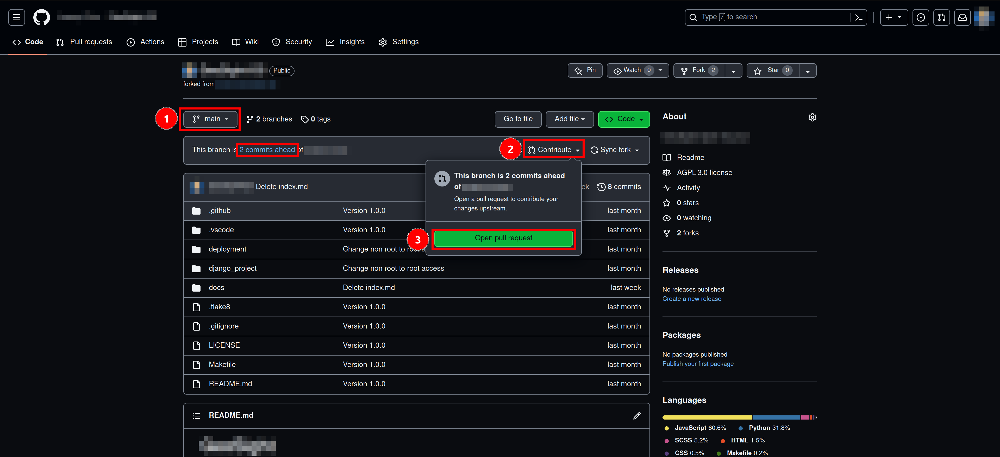

Documentation¶
Overview¶
Welcome to the instructions for those wishing to contribute to our documentation!
Our documentation system is based on the popular mkdocs system. We encourage you to read the upstream documentation from mkdocs for the finer details of how mkdocs. In particular, read this page before you get to work. Mkdocs is not hard, but it may feel initially a little different if you are used to creating your documentation in word.
We use mkdocs because it has some great and useful features. Most especially:
- The code and the documentation are versioned together. This means that for whatever version of the code we have in our production release, we can be sure the documentation matches that release. We can also look back at changes over time through the version history when needed.
- It can render beautiful static (not needing a backend server) web sites with great features like search, styling, intuitive navigation etc.
- It can optionally render PDF documents from the same source markdown.
- An ecosystem of plugins and themes makes mkdocs really flexible and extensible.
Some terminology¶
In our documentation, we have organised the information using a specific nomenclature:
- guide: A guide is a multi-step workflow / tutorial that leads your through common activities.
- manual: A collection of documents that describe each part of the project in a matter of fact way without presupposing any specific workflow is being undertaken.
For each of the main topic areas (user, admin, developer, devops, api user) we provide guides and manuals as is appropriate.
Organisation¶
The documentation is broadly organised in the following structure. This structure may change over time as sections are added / moved / removed:
src
├── about
├── administrator
│ ├── guide
│ └── manual
├── developer
│ ├── documentation
│ ├── guide
│ └── manual
├── devops
│ ├── guide
│ └── manual
└── user
├── guide
├── manual
├── quickstart
└── research
File naming conventions¶
Please follow these conventions when writing your documentation:
- Write file names in all lower case, with hyphens separating words (no spaces). e.g.
important-file.mdnotImportant File.mdor other deviations. - Place the image files in the img folder adjacent to your content.
- Do not abbreviate any words in file names - but try to use terse, descriptive names.
- Place your content into the appropriate place as outline in the structure above.
- Each file should only one level one heading e.g.
# Page title - Headings and subheadings should be written as a terse phrase starting with a capital letter and subsequent words in lower case unless they are proper nouns. Do not place a colon after the heading.
- Use unicode number markers to reference numbers in images e.g. 1️⃣
- Every heading / sub-heading should have a single line underneath it summarising the content that will follow. This sentence will be used in the help center in the application to give the user a reference point for the text that will follow. It also makes the help text more consistent and readable.
- For every section that images, the first image will be used as the thumbnail if the heading is referenced from the application.
Contributing to the documentation¶
 Note: The repo name in the images below is blurred out, you should work against the SAEOSS-Portal repository when following these notes.
Note: The repo name in the images below is blurred out, you should work against the SAEOSS-Portal repository when following these notes.
To start adding to the documentation navigate to the home page of the repository.
Once on the repository home page, 1️⃣ click on Fork

On the next page 1️⃣ Make sure your github account is selected as the owner and 2️⃣ make sure the "Copy the main branch only" option is ticked as you will only need the main branch.

Once you have forked the repository, ensure that you are working in the main branch. 
Once you are in your fork of the repository, click on . on your keyboard. This will open a web editor where you can begin adding to, or editing, the documentation.

Once the editor loads, you will be greeted by 1️⃣ a preview of the project's README.txt. 2️⃣ Click on the docs directory in the menu on the left, this will expand the directory. To confirm that you are working in the right branch 3️⃣️ it will say main in the bottom left of the editor.

Once you have expanded the docs directory, 1️⃣ click on the src directory. All sub-directories within the src directory contain the files that become the documentation. Each sub-directory contains an index.md file that is required for the building of the documentation and static site. If you add a new sub-directory into any folder it must also contain a populated index.md file.

Once you have chosen which section of documentation you would like to edit (e.g. user/guide/index.md), click on the file and it will open in the web editor. 
Once you have the file open, you can start adding to the documentation using Markdown syntax. If you need to add images to your documentation, add them to the relative img sub-directories following the naming conventions set out in the naming-convention.README within the img folders.

When you have completed making additions to (or editing) the documentation, 1️⃣ click on the source control tab then 2️⃣ click on the plus symbol next to the changes you are finished with to stage them, 3️⃣️ add a commit message that is associated with the work you have done, and the 4️⃣ Click on Commit & Push

Once you have committed your changes, 1️⃣ Click on the burger menu and then 2️⃣ click on Go To Repository

Your fork of the repository will be opened in a new tab within your browser, navigate to that tab. Once there 1️⃣ ensure you are on the main, you should see how many commits ahead of the upstream branch you are, then 2️⃣ click on Contribute-> Open pull request.

On the next screen, 1️⃣ give your pull request a meaningful title, 2️⃣ give additional details regarding changes made in the larger text box, then 3️⃣️ click on Create pull request. Also ensure you are creating a pull request to the upstream main branch from your main branch.

Once your pull request is opened you need to wait for it to be merged before you can open a new one.
Creating new files¶
Page metadata¶
Whenever you create a new file, you should add the standard header to the top of the file:
---
title: SAEOSS Portal Documentation
summary: The SAEOSS-Portal is a system of software components functioning together as the National Central Earth Observation Geospatial Repository.
- Tim Sutton
- Juanique Voogt
date: 2024-01-10
copyright: Copyright 2024, SANSA
contact:
license: This program is free software; you can redistribute it and/or modify it under the terms of the GNU Affero General Public License as published by the Free Software Foundation; either version 3 of the License, or (at your option) any later version.
#context_id: 1234
---
The summary can be updated to include your name for documents you contribute to.
The context_id is used to create a unique permalink to this document, and is optional. See further down in this document for more details.
Navigation¶
All pages need to be added to the 'Nav' section of the mkdocs-base.yml file. This will ensure that it is available in the menus and that mkdocs renders without errors. For example, if you wish to add a new page to the User Guide area, in Nav you would add a line like this:
- "Navigating the map": users/guide/map-navigation.md
Sometimes you may not wish to have the new page displayed in the menu system (this can be useful when, for example, it is accessed via a link in another page). In these cases, leave the menu entry part blank e.g.
- "": users/guide/map-navigation.md
Mkdocs will still generate the page but it will not be added to the menu.
Technical notes¶
Working locally¶
If you want to work with the documentation locally (i.e. directly on your PC), you need to follow this general process:
- Install python
- Install pip
- Install virtualenv (
pip install virtualenv) - Make the docs folder your working directory (
cd docs) - Create the virtual env in the docs folder (
python -m venv env) - Activate the venv (
source env/bin/activate) - Install the python modules listed in docs/requirements.txt (
pip install -r requirements.txt) - If you are on Linux or macOS, open the docs directory in a shell and run
build-docs-html.sh - In the docs directory, run
mkdocs serve - Open your web browser at https://localhost:8000 to view the rendered docs.
Note that mkdocs serve will dynamically re-render the docs any time you make a change. The process above is illustrated in the diagram below:

Hooks¶
We implement two hooks (plugins for mkdocs that are invoked during the docs rendering process).
- uuid_redirects_hook.py - this is used to handle page redirects from a uuid - see below for more details
- python_manual_hook.py - this is used to auto-generate the reference guide for the python modules, classes and functions that make up the code base for this project.
Permalinks for user and admin docs¶
If you are a developer, you should be aware of the workflow for creating user and administrator documentation for each page you create.
Every page should have a help link on it that leads to the appropriate manual page. The workflow for doing this is:
- Generate a new page UUID using the provided python utility e.g.
./create-uuid.py - Create a new page in the appropriate manual section e.g.
docs/src/user/manual/login.md - In the metadata section at the top of the page, add the context id e.g.
context_id: V4cVEFd2TmwYJVb5HvWRwa - In your django view, set up your help button to point to the site url and your context id. e.g.
https://siteurl/V4cVEFd2TmwYJVb5HvWRwa
Whenever the user visits the page using the UUID URL, they will be redirected to the correct page e.g. https://siteurl/login/. This system protects us from file renaming and reorganising on the site, and ensures that the help link will always remain valid.
Generating PDFS¶
To generate PDFS, cd into SAEOSS-Portal/docs and then run the build-docs-pdf in a local terminal
Generating Static Site¶
To generate HTML, cd into SAEOSS-Portal/docs and then run the build-docs-html in a local terminal.
You can then run mkdocs serve to generate the static site on your local host, if there is a port conflict you can specify the port using the -a flag e.g mkdocs serve -a 127.0.0.1:8001.